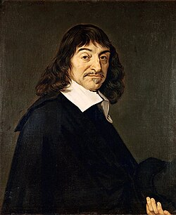
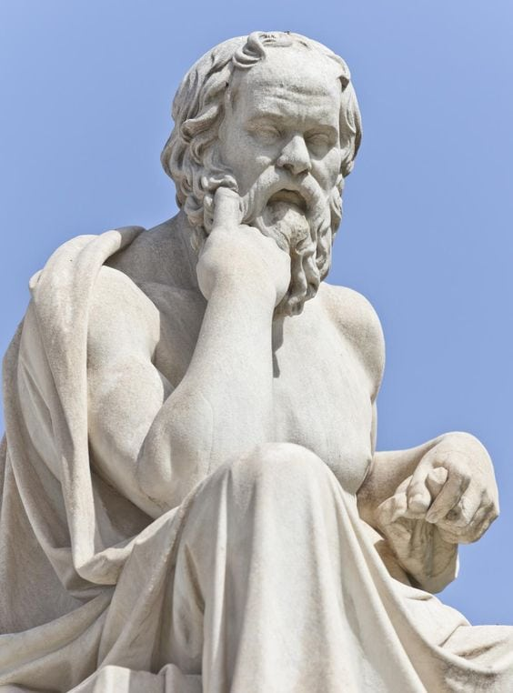

Words are footprints of thought,
and every quote is a moment where a mind met truth—however briefly.
Here, authors do not merely write; they leave fragments of understanding,
for others to question, carry, and transform.
Quotes
"I think, therefore I am"
The Latin cogito, ergo sum, usually translated into English as "I think, therefore I am",
is the "first principle" of the philosophy of the French scientist and philosopher René Descartes.
He originally published it in French as je pense, donc je suis in his 1637 Discourse on the Method,
so as to reach a wider audience than Latin would have allowed.
It later appeared in Latin in his Principles of Philosophy,

Authors
"Socrates"
TSocrates (
470–399 BC) was a foundational Greek philosopher from Athens,
credited as a founder of Western philosophy and the first moral philosopher.
Known for his "Socratic method" of questioning, he focused on ethics and self-examination,
famously claiming the unexamined life is not worth living. He left no writings,
with his life and ideas known through students, mainly Plato.
